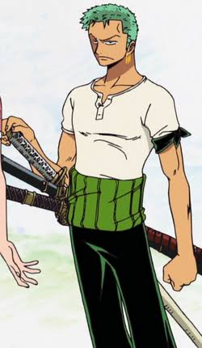

Quem é Rononoa Zoro?
Roronoa Zoro, Caçador de Piratas, mestre espadachim, um dos 11 piratas que integram a chamada "Pior Geração".
A história de Zoro começa com um sonho e grande objetivo de sua vida é se tornar o maior espadachim do mundo um dia. Mas esse seu compromisso teve origem quando o guerreiro ainda era criança, em uma promessa feita a uma amiga.
Enquanto treinada na vila Shimotsuki, em sua infância, Zoro já demonstrava força suficiente para vencer espadachins adultos em diferentes dojos. Em um desses dojos, porém, o sensei faz um acordo com ele, dizendo que, se ele não conseguisse vencer sua filha, Kuina, ele deveria treinar no dojo. Para surpresa de Zoro, ele não foi capaz de vencer a jovem, e passou a treinar no local.
Após 2000 derrotas para a garota, usando apenas espadas de treino, Zoro sugeriu uma nova disputa com espadas de verdade, mas perdeu novamente para a amiga. Enquanto ele chorava de frustração, Kuina lhe contou que também sonhava em se tornar a melhor espadachim, mas lamentou que nunca poderia alcançar tal feito, já que, segundo seu pai, o fato de ela ser mulher faria com que suas habilidades diminuíssem conforme ela amadurecesse. Irritado, Zoro a fez prometer que ambos iriam treinar para alcançar esse sonho até que um deles conseguisse.
Infelizmente, Kuina caiu das escadas do dojo no dia seguinte e acabou falecendo. Em luto e profundamente abalado por sua amiga nunca ter tido a chance de realizar seu sonho, Zoro passou a encarar como missão um dia se tornar o melhor espadachim do mundo.
Como é a aparência dele?

Zoro é um jovem musculoso de estatura média com pele levemente bronzeada. Ele sempre carrega suas três espadas junto com ele, enrolado com um haramaki verde sobre o quadril direito, permitindo que ele as saque facilmente com a mão esquerda. Das três espadas que ele possui, ele sempre foi visto carregando a Wado Ichimonji, enquanto suas outras duas espadas variaram ao longo do tempo devido a elas serem destruídas e substituídas por outras progressivamente melhores. Embora sua mão direita seja vista geralmente sobre eles, ele também pode usar essa mão para puxar suas espadas antes de se sentar. Ele tem três brincos de ouro idênticos no lóbulo da orelha esquerda. Zoro normalmente mantém uma Bandana preta amarrada em torno de seu bíceps esquerdo e amarra ao redor de sua cabeça quando ele está lutando seriamente contra um adversário.
O corpo de Zoro está coberto de cicatrizes de suas muitas batalhas, mais notavelmente a enorme cicatriz que se estende do ombro esquerdo até o quadril direito, adquirida durante a derrota contra o maior espadachim do mundo, Dracule Mihawk, no Baratie.
O corpo de Zoro está coberto de cicatrizes de suas muitas batalhas, mais notavelmente a enorme cicatriz que se estende do ombro esquerdo até o quadril direito, adquirida durante a derrota contra o maior espadachim do mundo, Dracule Mihawk, no Baratie.
A outra característica notável de Zoro é seu cabelo verde cortado, que Sanji frequentemente o provoca chamando-o de "marimo" devido à sua semelhança com um.
Personalidade dele
Zoro aparenta ter uma personalidade muito severa e séria, sendo uma pessoa distante nos momentos conturbados. Porém, quando perde a paciência, gera cenas cômicas onde o personagem parece escandaloso, pateta e um tanto exagerado nos gritos e reclamações. Fora esses momentos de alívio cômico, a única emoção que Zoro se sente confortável e confiante em demonstrar abertamente é raiva.
Quando vemos o personagem sorrir, geralmente são em momentos empolgantes da batalha onde ele se sente confiante ou está tendo uma boa luta. Fora isso, são raros os momentos onde o vemos rindo com companheiros de tripulação, mas frequentemente o vemos dormindo, treinando ou bebendo.
Sobre sentimentos de tristeza, só vimos Zoro chorar em momentos específicos da série: quando Kuina – sua amiga de infância – faleceu e quando ele foi derrotado por Dracule Mihawk, fazendo uma promessa a Monkey D. Luffy de que nunca mais perderia. Em momentos que são tristes para os Chapéus de Palha, Zoro escolhe ficar mais reservado e em silêncio sem demonstrar suas emoções.
Até mesmo quando está em combate, Zoro já demonstrou que prefere “lutar sem emoções“, para que elas não atrapalhem seu julgamento como um espadachim. Óbvio que ele se preocupa com seus companheiros e já deixou claro em vários momentos que quer protege-los nem que custe sua própria vida, mas sua preferência é lutar sem motivações emocionais para não perder o foco.
Zoro também demonstrou uma postura muito perspicaz para tomar decisões importantes e lógicas em momentos delicados, conseguindo avaliar com certa calma situações complexas com uma visão mais objetiva. O que diversas vezes pode fazer com que seus adversários acreditem que ele é o capitão ou o imediato do Bando do Chapéu de Palha.
Todas as recompensas do Zoro
- 1.111.000.000 Berries
- 320.000.000 Berries
- 120.000.000 Berries
- 60.000.000 Berries
Primeira recompensa
Recebeu uma recompensa de 60 milhões depois que derrotou o assassino Daz Bonez (Mr. 1) e também por outros 100 caçadores de recompensas em Whisky Peak.
Segunda recompensa
Por derrotar Kaku da CP9, a recompensa foi aumentada para 120 milhões. Devido a esta recompensa, ele foi nomeado como um dos Onze Supernovas.
Terceira recompensa
Ao ajudar na derrota dos Piratas Donquixote e derrotar Pica, a recompensa aumenta para $320.000.000 .
Quarta recompensa
É a atual recompensa e conseguiu ajudando em onigashima a derrotar os imperadores Kaido e Big Mom,consegiu a recompensa de 1.111.000.000 por derrotar King um dos Super astro principais ou também conhecido como o imediato da tripulação
As espadas do Zoro
Após a morte de Kuina, Zoro pediu a Koshiro, pai da menina e seu sensei, que lhe desse a espada da família, Wado Ichimonji. A partir daí, o espadachim começou a treina sua técnica Santoryu, na qual usa as três espadas que sempre carrega consigo, com duas delas variando entre novas armas, mas sempre em posse da Wado Ichimonji.
Atualmente, as três espadas que Zoro utiliza são:
- Wado Ichimonji: antiga espada da família de Kuina, esta espada foi a obra-prima do lendário ferreiro Shimotsuki Kozaburo , considerada uma das 21 O Wazamono.
- Sandai Kitetsu: esta espada, que já pertenceu a a Ipponmatsu, foi a terceira das Espadas de Kitetsu criadas por Tenguyama Hitetsu.
- Emna: criada por Kozaburo e também uma das 21 O Wazamono, esta espada tem a habilidade especial de drenar Busoshoku Haki. Foi uma das únicas aramas capaz de ferir o Imperador Kaido.
Poderes do Zoro
Considerado um guerreiro de força e habilidades equivalentes às de Luffy, protagonista do anime, Zoro deve o desenvolvimento de seus talentos aos pesados treinos que teve desde sua infância, no dojo da família de Kiuna e, mais tarde, com o espadachim Dracule Mihawk.
Além de sua super força, sua precisão impecável em seus golpes de espada, velocidade e agilidade inacreditáveis, resistência, e seu maior controle sobre cada uma de suas habilidades com o decorrer dos episódios, Zoro também desenvolveu técnicas específicas com suas três espadas.
- Flying Slash Attack: usando a pressão do ar, Zoro consegue atacar o inimigo à distância.
- Santoryu (Estilo Três Espadas): embora já demonstrasse grande habilidade com o Ittoryu (Estilo Uma Espada) e Nitoryu (Estilo Duas Espadas), Zoro desenvolveu o Santoryu, no qual luta com uma espada em cada mão e uma terceira na boca, usando as armas para realizar ataques de alta velocidade, golpes diretos e ataques de projeção de ar comprimido em uma mesma técnica.
- Kyutoryu (forma Ashura): Zoro chegou a um nível extremo de poder ao despertar este estilo e espada por meio do qual, usando um intenso foco espiritual, ele ganha a aparência temporária de ter seis braços e três cabeças, sendo capaz de usar nove espadas ao mesmo tempo, triplicando seu potencial espadachim.